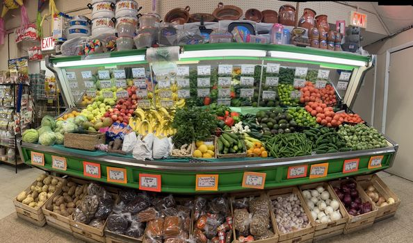

San Luis Grocery Store

Produce

- Apples (various varieties)
- Bananas
- Oranges
- Grapes
- Strawberries
- Blueberries
- Tomatoes
- Lettuce (various types such as iceberg, romaine, and mixed greens)
- Carrots
- Cucumbers
- Bell peppers (various colors)
- Broccoli
- Cauliflower
- Potatoes (russet, red, sweet potatoes)
- Onions (yellow, red, white)
- Garlic
- Avocados
- Spinach
- Kale
- Celery